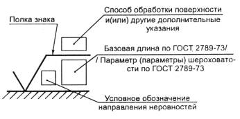
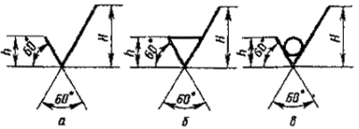
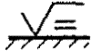

ГОСТ 2.309-73 ЕСКД. Обозначения шероховатости поверхностей
ГОСТ 2.309-73
Содержание:
1. ОБОЗНАЧЕНИЕ ШЕРОХОВАТОСТИ ПОВЕРХНОСТЕЙ
2. ПРАВИЛА НАНЕСЕНИЯ ОБОЗНАЧЕНИЙ ШЕРОХОВАТОСТИ ПОВЕРХНОСТЕЙ НА ЧЕРТЕЖАХ
МЕЖГОСУДАРСТВЕННЫЙ СТАНДАРТ
ЕДИНАЯ СИСТЕМА КОНСТРУКТОРСКОЙ ДОКУМЕНТАЦИИ
ОБОЗНАЧЕНИЯ ШЕРОХОВАТОСТИ
ПОВЕРХНОСТЕЙ
ИПК ИЗДАТЕЛЬСТВО СТАНДАРТОВ
Москва
МЕЖГОСУДАРСТВЕННЫЙ СТАНДАРТ
|
Единая система конструкторской документации ОБОЗНАЧЕНИЯ ШЕРОХОВАТОСТИ ПОВЕРХНОСТЕЙ Unified system for design documentation. |
ГОСТ Взамен |
Постановлением Государственного комитета стандартов Совета Министров СССР от 9 ноября 1973 г. № 2604 срок введения установлен
с 01.01.75
* Издание (апрель 2000 г.) с Изменениями № 1, 2, утвержденными в июне 1980 г., августе 1984 г.
(ИУС 11-80, 12-84)
Настоящий стандарт устанавливает обозначения шероховатости поверхностей и правила нанесения их на чертежах изделий всех отраслей промышленности.
Стандарт полностью соответствует стандарту ИСО 1302.
(Измененная редакция, Изм. № 1, 3).
1. ОБОЗНАЧЕНИЕ ШЕРОХОВАТОСТИ ПОВЕРХНОСТЕЙ
1.1. Шероховатость поверхностей обозначают на чертеже для всех выполняемых по данному чертежу поверхностей изделия, независимо от методов их образования, кроме поверхностей, шероховатость которых не обусловлена требованиями конструкции.
1.2. Структура обозначения шероховатости поверхности приведена на черт. 1 .
При применении знака без указания параметра и способа обработки его изображают без полки.

Черт. 1
(Измененная редакция, Изм. № 3).
1.3. В обозначении шероховатости поверхности применяют один из знаков, изображенных на черт. 2 .

Черт. 2
Высота h должна быть приблизительно равна применяемой на чертеже высоте цифр размерных чисел. Высота H равна (1,5 ... 5) h. Толщина линий знаков должна быть приблизительно равна половине толщины сплошной основной линии, применяемой на чертеже.
В обозначении шероховатости поверхности, способ обработки которой конструктором не устанавливается, применяют знак ( черт. 2 a ).
В обозначении шероховатости поверхности, которая должна быть образована только удалением слоя материала, применяют знак ( черт. 2б).
В обозначении шероховатости поверхности, которая должна быть образована без удаления слоя материала, применяют знак ( черт. 1в) с указанием значения параметра шероховатости.
(Измененная редакция, Изм. № 3).
1.4. Поверхности детали, изготовляемой из материала определенного профиля и размера, не подлежащие по данному чертежу дополнительной обработке, должны быть отмечены знаком без указания параметра шероховатости.
Состояние поверхности, обозначенной знаком , должно соответствовать требованиям, установленным соответствующим стандартом или техническими условиями, или другим документом, причем на этот документ должна быть приведена ссылка, например, в виде указания сортамента материала в графе 3 основной надписи чертежа по ГОСТ 2.104-68.
1.5. Значение параметра шероховатости по ГОСТ 2789-73 указывают в обозначении шероховатости:
после соответствующего символа, например: Ra 0,4; Rmax 6,3; Sm 0,63; t 50 70; S 0,032; Rz 50.
Примечание. В примере t50 70 указана относительная опорная длина профиля tp = 70 % при уровне сечения профиля р = 50 %,
(Измененная редакция, Изм. № 3).
1.2-1.5. (Измененная редакция, Изм. № 2).
1.5а. При указании наибольшего значения параметра шероховатости в обозначении приводят параметр шероховатости без предельных отклонений, например: .
(Измененная редакция, Изм. № 3).
1.5б. При указании наименьшего значения параметра шероховатости после обозначения параметра следует указывать « min », например: ; .
(Измененная редакция, Изм. № 3).
1.5а, 1.56. (Введены дополнительно, Изм. № 2).
1.6. При указании диапазона значений параметра шероховатости поверхности в обозначении шероховатости приводят пределы значений параметра, размещая их в две строки, например:
|
Ra |
0,8 0,4 |
; |
Rz 0,10 0,05 |
; |
Rmax 0,80 0,32 |
; |
t 50 70 50 и т. п. |
В верхней строке приводят значение параметра, соответствующее более грубой шероховатости.
1.7. При указании номинального значения параметра шероховатости поверхности в обозначении приводят это значение с предельными отклонениями по ГОСТ 2789-73, например:
Ra 1 + 20 %; Rz 100 –10 % ; Sm 0,63 +20 %; t 50 70 ± 40 % и т. п.
1.6, 1.7. (Измененная редакция, Изм. № 2, 3).
1.8. При указании двух и более параметров шероховатости поверхности в обозначении шероховатости значения параметров записывают сверху вниз в следующем порядке (см. черт. 3 ):
параметр высоты неровностей профиля,
параметр шага неровностей профиля,
относительная опорная длина профиля.
Черт. 3
(Измененная редакция, Изм. № 3).
1.9. При нормировании требований к шероховатости поверхности параметрами Ra , Rz , Rmax базовую длину в обозначении шероховатости не приводят, если она соответствует указанной в приложении 1 ГОСТ 2789-73 для выбранного значения параметра шероховатости.
(Измененная редакция, Изм. № 2).
1.10. Условные обозначения направления неровностей должны соответствовать приведенным в таблице. Условные обозначения направления неровностей приводят на чертеже при необходимости.
|
Типы направления неровностей |
Обозначение |
Типы направления неровностей |
Обозначение |
|
 |
|||
|
|
|||
|
|
|

Высота знака условного обозначения направления неровностей должна быть приблизительно равна h . Толщина линий знака должна быть приблизительно равна половине толщины сплошной основной линии.
(Измененная редакция, Изм. № 3).
1.11. Вид обработки поверхности указывают в обозначении шероховатости только в случаях, когда он является единственным, применимым для получения требуемого качества поверхности ( черт. 4 ).
Черт. 4
(Измененная редакция, Изм. № 3).
1.12. Допускается применять упрощенное обозначение шероховатости поверхностей с разъяснением его в технических требованиях чертежа по примеру, указанному на черт. 5 .
Черт. 5
В упрощенном обозначении используют знак и строчные буквы русского алфавита в алфавитном порядке, без повторений и, как правило, без пропусков.
(Измененная редакция, Изм. № 2, 3).
1.13. Если направление измерения шероховатости должно отличаться от предусмотренного ГОСТ 2789-73, его указывают на чертеже по примеру, приведенному на черт. 6 .
Черт. 6
(Измененная редакция. Изм. № 3).
2. ПРАВИЛА НАНЕСЕНИЯ ОБОЗНАЧЕНИЙ ШЕРОХОВАТОСТИ ПОВЕРХНОСТЕЙ НА ЧЕРТЕЖАХ
2.1. Обозначения шероховатости поверхностей на изображении изделия располагают на линиях контура, выносных линиях (по возможности ближе к размерной линии) или на полках линий-выносок.
Допускается при недостатке места располагать обозначения шероховатости на размерных линиях или на их продолжениях, на рамке допуска формы, а также разрывать выносную линию ( черт. 7).
Черт. 7
(Измененная редакция, Изм. № 3).
2.2. На линии невидимого контура допускается наносить обозначение шероховатости только в случаях, когда от этой линии нанесен размер.
2.3. Обозначения шероховатости поверхности, в которых знак имеет полку, располагают относительно основной надписи чертежа так, как показано на черт. 8 и 9 .
2.4. Обозначения шероховатости поверхности, в которых знак не имеет полки, располагают относительно основной надписи чертежа так, как показано на черт. 10 .
2.5. При изображении изделия с разрывом обозначение шероховатости наносят только на одной части изображения, по возможности ближе к. месту указания размеров ( черт. 11 ).
Черт. 8
Черт. 9
Черт. 10
(Измененная редакция, Изм. № 3).
Черт. 11
(Измененная редакция, Изм. № 3).
Черт. 12
(Измененная редакция. Изм. № 3).
2.6. При указании одинаковой шероховатости для всех поверхностей изделия обозначение шероховатости помещают в правом верхнем углу чертежа и на изображении не наносят ( черт. 12 ).
Размеры и толщина линий знака в обозначении шероховатости, вынесенном в правый верхний угол чертежа, должны быть приблизительно в 1,5 раза больше, чем в обозначениях, нанесенных на изображении.
Примечание. При расположении поверхности в заштрихованной зоне обозначение наносят только на полке линии-выноски.
2.7. Обозначение шероховатости. одинаковой для части поверхностей изделия, может быть помещено в правом верхнем углу чертежа ( черт. 13 , 14 ) вместе с условным обозначением . Это означает, что все поверхности, на которых на изображении не нанесены обозначения шероховатости или знак , должны иметь шероховатость, указанную перед условным обозначением .
Размеры знака, взятого в скобки, должны быть одинаковыми с размерами знаков, нанесенных на изображении.
Примечание. Не допускается обозначение шероховатости или знак выносить в правый верхний угол чертежа при наличии в изделии поверхностей, шероховатость которых не нормируется.
Черт. 13
Черт. 14
(Измененная редакция. Изм. № 3).
2.8. Обозначение шероховатости поверхностей повторяющихся элементов изделия (отверстий, пазов, зубьев и т. п.), количество которых указано на чертеже, а также обозначение шероховатости одной и той же поверхности наносят один раз, независимо от числа изображений.
Обозначения шероховатости симметрично расположенных элементов симметричных изделий наносят один раз.
2.9. Если шероховатость одной и той же поверхности различна на отдельных участках, то эти участки разграничивают сплошной тонкой линией с нанесением соответствующих размеров и обозначений шероховатости ( черт. 15 а ). Через заштрихованную зону линию границы между участками не проводят ( черт. 15 б ).
Черт. 15
(Измененная редакция. Изм. № 3).
2.10. Обозначение шероховатости рабочих поверхностей зубьев зубчатых колес, эвольвентных шлицев и т. п., если на чертеже не приведен их профиль, условно наносят на линии делительной поверхности ( черт. 16а, б, в ) , а для глобоидных червяков и сопряженных с ними колес - на линии расчетной окружности ( черт. 16г ).
Черт. 16
(Измененная редакция. Изм. № 3).
2.11. Обозначение шероховатости поверхности профиля резьбы наносят по общим правилам при изображении профиля ( черт. 17 а ) или условно на выносной линии для указания размера резьбы ( черт. 17б , в, г, д ), на размерной линии или на ее продолжении ( черт. 17 е ).
Черт. 17
(Измененная редакция. Изм. № 3).
2.4-2.11. (Измененная редакция, Изм. № 2).
2.12. Если шероховатость поверхностей, образующих контур, должна быть одинаковой, обозначение шероховатости наносят один раз в соответствии с черт. 18 а , б. Диаметр вспомогательного знака О - 4 ... 5 мм.
В обозначении одинаковой шероховатости поверхностей, плавно переходящих одна в другую, знак О не приводят ( черт. 19).
Черт. 18
Черт. 19
(Измененная редакция, Изм. № 1, 2, 3).
2.13. Обозначение одинаковой шероховатости поверхности сложной конфигурации допускается приводить в технических требованиях чертежа со ссылкой на буквенное обозначение поверхности, например: «шероховатость поверхности А - ». При этом буквенное обозначение поверхности наносят на полке линии-выноски, проведенной от утолщенной штрихпунктирной линии, которой обводят поверхность на расстоянии 0,8 ... 1 мм от линии контура ( черт. 20 ).
Черт. 20